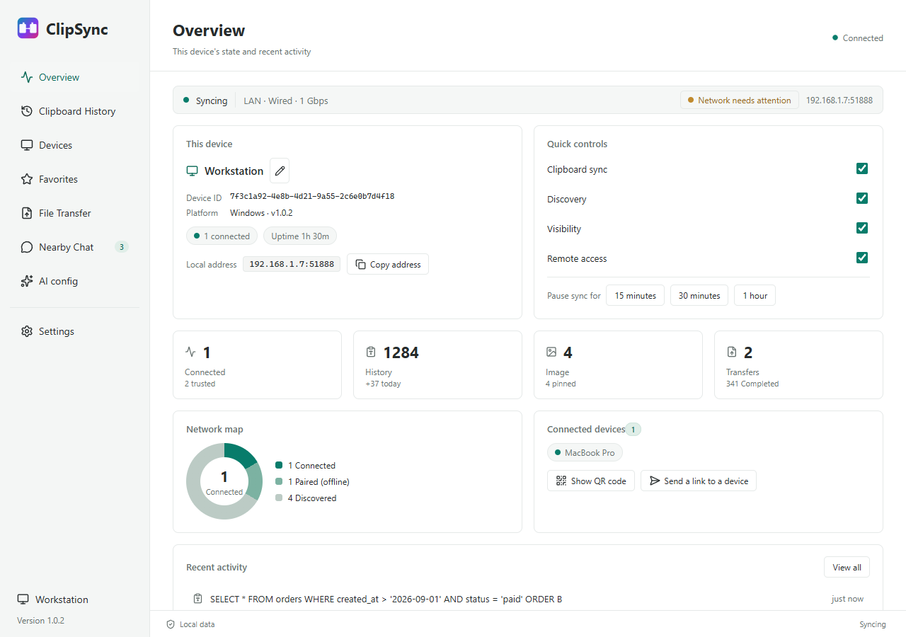
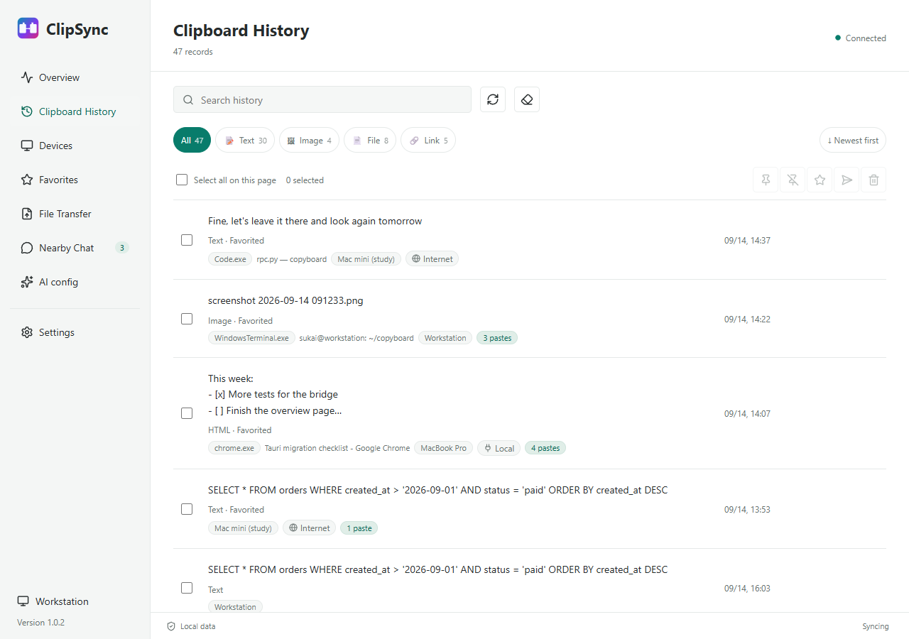
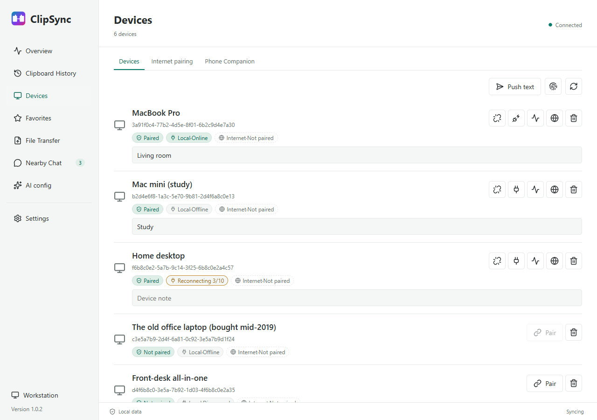
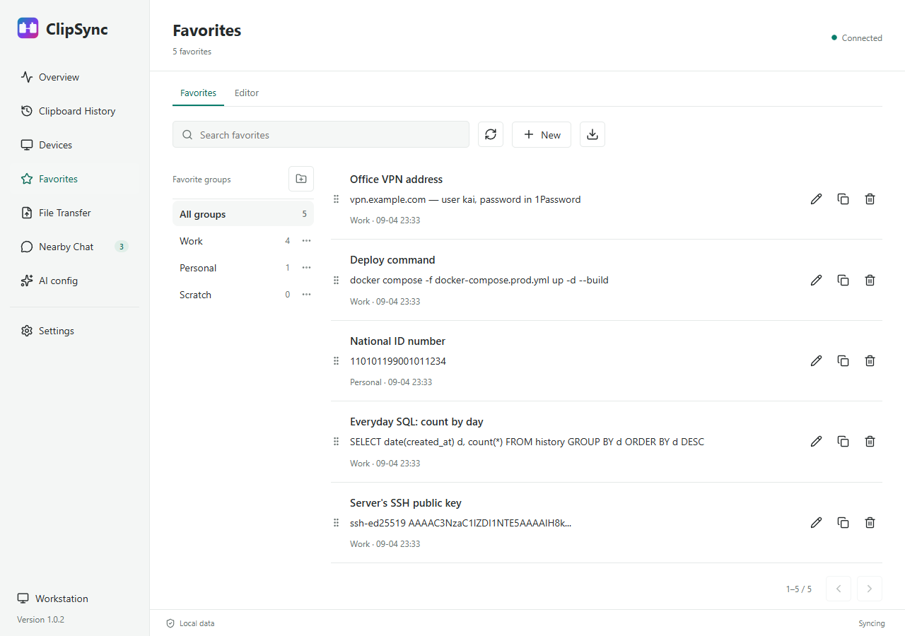
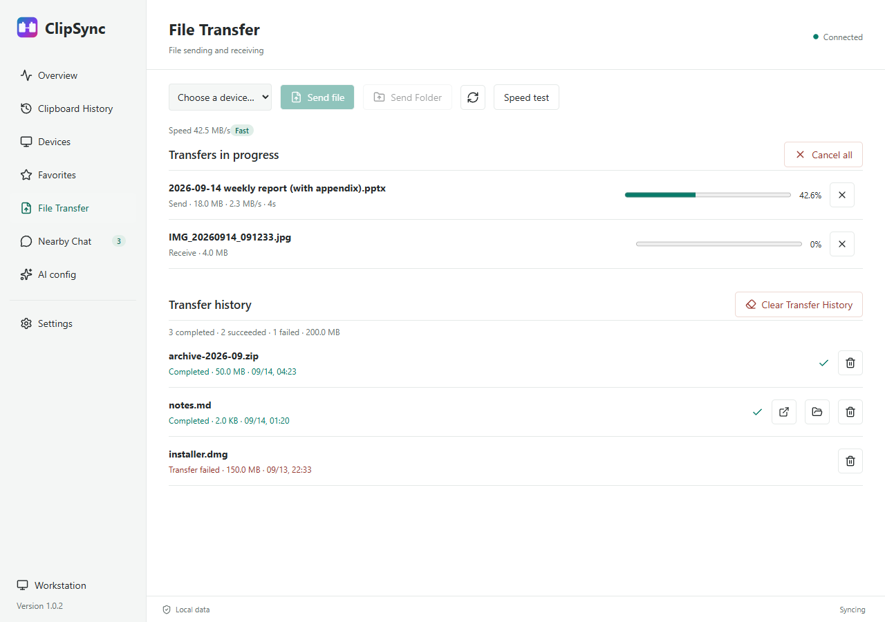
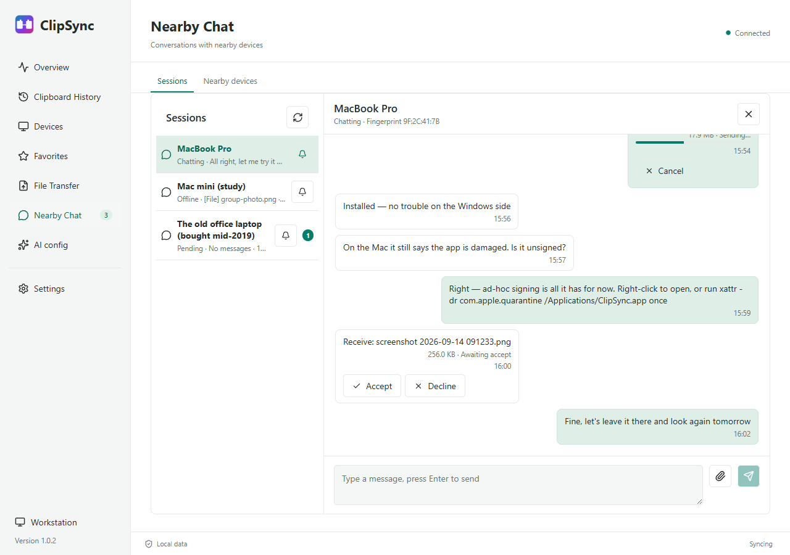
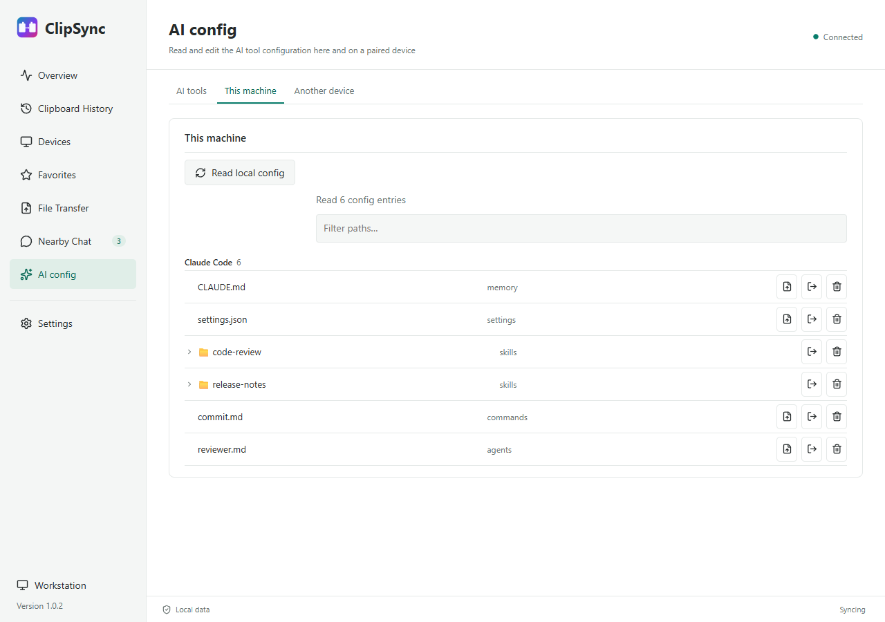
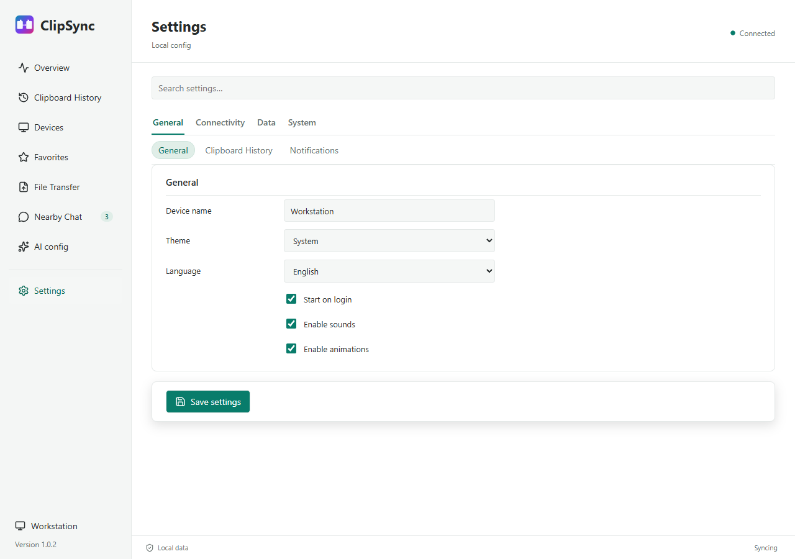
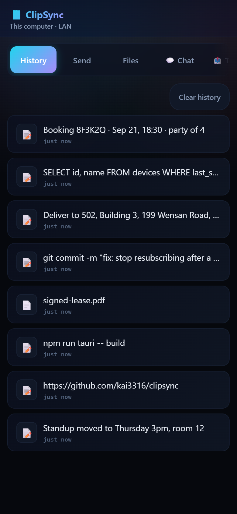

Direct over your local network, end-to-end encrypted. No account, no cloud,
no server in the middle — the things on your machines travel only between
your machines.
Transport TLS 1.3 · AES-256-GCM per frameIdentity Ed25519 · TOFU fingerprint pinningDiscovery mDNS · port 19990On disk AES-256-GCM · PBKDF2, 600k iterations
Workstation192.168.1.7Connected
TEXTHTMLRTFPNGURLFILE
TEXTURLPNGFILE
MacBook Pro192.168.1.9Connected
CLIP v1TLS 1.3AES-256-GCM per framepeer to peer on the LANno server
ClipSync — Overview

Why
Not every clipboard tool is the same
Most of them go through a cloud, or only carry plain text. ClipSync takes a different route.
Capability
ClipSync
Cloud clipboard tools
Rich text / HTML
✓ Links, tables and formatting intact
✗ Usually flattened to text
Images
✓ PNG / BMP / TIFF / DIB, original quality
✗ Often unsupported
File transfer
✓ Peer to peer, encrypted
✗ Unsupported
Across networks
✓ Optional relay, end-to-end encrypted
~ On the vendor's servers
Privacy
✓ Direct by default; a relay sees ciphertext only
✗ Plaintext through the cloud
Account
✓ None — install and use it
✗ Sign-up required
Encryption
✓ TLS 1.3 + AES-256-GCM per frame
~ If any
Price
✓ Free and open source (MIT)
✗ Freemium or subscription
The window
Everything in one window
Eight pages, one click each. Move between them with
Ctrl / Cmd + 1–8. Closing the window only puts it
away — the app keeps running in the tray, and "Quit ClipSync" in the tray
menu is what actually exits.
Overview
01
Overview
Sync state, this machine's address, four quick switches (sync / discovery / visibility / remote access), a network map and recent activity.
Clipboard History

02
Clipboard History
Search, filter by type, copy / favourite / translate / delete per row, with multi-select batch actions. Deduplicated by content hash, so two machines copying back and forth do not loop.
Devices

03
Devices
Pairing code comparison, certificate fingerprints, connection tests, per-device notes — plus internet pairing and the phone companion.
Favorites

04
Favorites
The clips worth keeping, on their own shelf: groups, an editor, drag-to-reorder, one-click copy back, Markdown export.
File Transfer

05
File Transfer
Send files or folders — drop them on the window. 1 MB chunks, resume after a drop, retry a failure, and a speed test.
Nearby Chat

06
Nearby Chat
Talk to a nearby device without pairing first — the other side must accept the invitation, and nothing is revealed until it does.
AI config

07
AI config
Built-in profiles for Claude Code, Codex, Cursor and Gemini. Compare the differences, then apply as overwrite, copy alongside, or append and merge.
Settings

08
Settings
Four groups and eleven cards, all searchable: filters, retention limits, backup and restore, diagnostics and updates.
New
A file on the other device, one click away
Copy a file on device A and device B's history shows the row — the name and the
size, with a Download button in place of Copy.
Nothing moves until it is pressed.
The name and the size, never a path. A path only means something on the machine it names, so that machine decides which of its own files a request may reach.
Over the paired, encrypted link. What arrives lands with ordinary received files; a folder arrives as a zip.
Neither clipboard is touched. This machine does not have the file, and saying it was copied would be a lie.
A failure says why. Moved or deleted since / not a file / no longer on that device / the send failed — worded in the language you are reading.
Clipboard History
Security
Encrypted by default, not as an option
Each device generates an Ed25519 key pair on first launch and its public key is
its identity. Data is encrypted twice on the wire and once at rest.
TLS 1.3 carries transport security, and every frame body is separately encrypted with AES-256-GCM.
TOFU pairing: the peer's certificate fingerprint is pinned on first trust, and any later change raises an alert.
Encrypted at rest: the private key and history are ciphertext, keyed from a device seed through PBKDF2 at 600,000 iterations, with an optional pre-shared password on top.
Sensitive content filtering: card numbers, national ID numbers, API keys, private keys and passwords become [FILTERED] before they are sent.
A relay never sees plaintext: across networks the keys are derived by the two devices themselves, and the relay is used only when a direct link is impossible.
Devices
Phone
Scan a code, no app to install
The desktop shows a QR code; the phone's browser scans it and has the whole
interface. Added to the home screen on iOS or Android it becomes an app of
its own, with its own icon and an offline shell.
Read the computer's clipboard history, push text to it, add favourites, copy to the phone
Upload files to the computer and download files from it
Chat with the computer and watch the transfer list
Token authentication, rotatable and clearable at any time

The phone's browser and the desktop window are looking at one history.
Download
Install and run — no Python needed
The installer ships its own runtime. macOS builds are ad-hoc signed only
(notarization needs a paid Apple Developer account), so if the first launch says
the app "is damaged", run
xattr -dr com.apple.quarantine /Applications/ClipSync.app once.
Windows 10 / 11
ClipSync_<version>_x64-setup.exeDownloadx64; starts from the Start menu once installed
macOS 12+
ClipSync_<version>_aarch64.dmgDownloadApple Silicon only; Intel Macs are not supported
Linux x86_64
ClipSync_<version>_amd64.debClipSync_<version>_amd64.AppImageDownloadBuilt in CI; primary testing is on Windows and macOS
The desktop app updates itself: it downloads the new version, installs it and
restarts. A Linux .deb install asks for your password
once; an .AppImage does not.
The previous interface is still released alongside
(clipsync-windows.zip /
clipsync-macos-arm64.zip /
clipsync-linux*.tar.gz) and shares the new one's
configuration and pairing records. Building from source is covered in the
README.